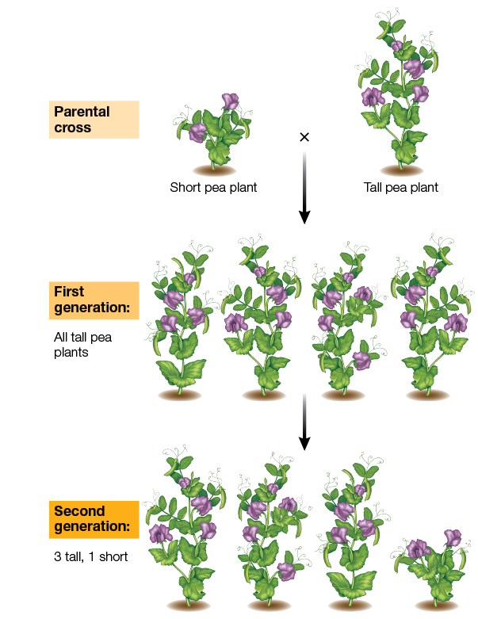

Offspring
offspring
An offspring is the descendent or progeny of an organism.
Definition of an offspring
An offspring is the descendent or progeny of an organism.
Offspring is a type of: organism role.
|
concept map
|
Genetics Developed as the Study of Discrete Heritable Traits
Gregor Mendel discovered the basics of genetics through breeding experiments with pea plants. When he crossed tall plants with short plants, all of the offspring were tall. Then when he crossed these offspring plants, he got one short plant for every three tall plants. From these experiments Mendel concluded that there was a tall factor and a short factor. Each plant inherited one factor from each parent, and the tall factor was dominant.

|
Examples of an offspring
- Nucleic acid hybridization — nucleic acid is nucleiced acid hybridization in an organism resulting in another 4 organisms. Here, another organism is an offspring.
- In lytic cycle, an organism is an offspring in the vegetative reproduction in another organism resulting in the first organism
- In lysogenic cycle, an organism is an offspring in the vegetative reproduction in another organism resulting in the first organism
- An organism is an offspring in the incomplete dominance cross breeding event in another organism resulting in another 4 organisms
- In self pollination, a gamete is fertilized by another gamete resulting in 2 organisms and a zygote. Here, one of the organisms is an offspring.
- In vitro hybridization — 2 true-breeding undergo in-vitro hybridization in an organism resulting in a monohybrid and another 3 organisms. Here, another organism is an offspring.
- In self pollination, a gamete is fertilized by another gamete resulting in 2 organisms and a zygote. Here, one of the organisms is an offspring.
- Hybridization — 2 true-breeding hybridize in an organism resulting in a monohybrid and another 3 organisms. Here, another organism is an offspring.
- An organism is an offspring in the homozygous recessive cross in another organism resulting in another 4 organisms
- An organism is an offspring in the homozygous dominant cross in another organism resulting in another 4 organisms
- In fungal life cycle, an organism is an offspring in the vegetative reproduction in another organism resulting in the first organism
- An organism is an offspring in the crossbreeding in another organism resulting in another 4 organisms
- An organism is an offspring in the crossbreeding in another organism resulting in another 4 organisms
- An organism is an offspring in the crossbreeding in another organism resulting in another 4 organisms
- In animal life cycle, an organism is an offspring in the vegetative reproduction in another organism resulting in the first organism
- A gamete is fertilized by another gamete resulting in 2 organisms and a zygote. Here, one of the organisms is an offspring.
- Inheritance — a character and a gene are inherited from an organism to another organism. Here, the second organism is an offspring.